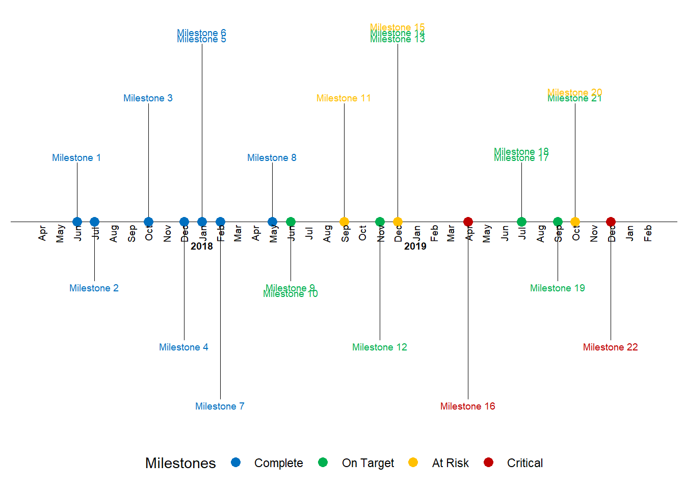

Chapter 3 Overall outputs
3.1 Timeline
One of the tricky bits about timelines is the format of the date and time of each event. This is different for each event so therefore we have four columns to incorporate this information in the following from for this repository and database. This will also mean that some of the information in other formats will have to be converted into these dimension and any other elements defined in each dataset I am combining to make a overall timeline.
By integrating these stage with some dataspice code/approach’s allows for me to generate metadata from each sheet of the excel file quickly using R. Here are the steps to do this.
#dataspice from github
library(dataspice)
#each project needs to be imported and then saved as csv in raw_data file to document variable names etc correctly into the json dataset.
# raw_data <-
project2 <- readxl::read_excel("./data/raw_data/Sem two planning.xlsx", sheet = 4)
project2## # A tibble: 22 x 11
## eventCode shortName month startDate finishDate startTime
## <chr> <chr> <chr> <chr> <chr> <dttm>
## 1 scr20200~ WorldRef~ june 20/06/20~ 20/06/2020 1899-12-31 09:00:00
## 2 scr20200~ Oweek july 44039 44043 1899-12-31 09:00:00
## 3 scr20200~ ReasonSt~ augu~ 44044 <NA> 1899-12-31 09:00:00
## 4 scr20200~ SSAFsurv~ augu~ 44044 <NA> 1899-12-31 09:00:00
## 5 scr20200~ TownHall2 augu~ 44044 <NA> 1899-12-31 09:00:00
## 6 scr20200~ openDay augu~ 44044 <NA> 1899-12-31 09:00:00
## 7 scr20200~ nic21st augu~ 44044 <NA> NA
## 8 scr20200~ SSAFbids sept~ 44075 <NA> 1899-12-31 09:00:00
## 9 scr20200~ Grad sept~ 44075 <NA> 1899-12-31 09:00:00
## 10 scr20200~ SSAFFunds sept~ 44075 <NA> NA
## # ... with 12 more rows, and 5 more variables: endTime <dttm>,
## # description <chr>, src <lgl>, ucX <lgl>, week <lgl>## New names:
## * `` -> ...7
## * `` -> ...8
## * `` -> ...9
## * `` -> ...10
## * `` -> ...11
## * ...data_names <- readxl::read_excel("./data/raw_data/Sem two planning.xlsx", sheet = 3)
#time
#location3.1.0.1 Past Outcomes
3.1.1 Action timeline
These sources of data are combined for my general timeline below. These summarised actions are also the flagged tasks from outlook calendar to catch up with this information but this can be automated in the future.
## # A tibble: 248 x 14
## Day action month person notes eventCode ...7 ...8 ...9 ...10 ...11 ...12
## <dbl> <chr> <chr> <chr> <lgl> <lgl> <lgl> <lgl> <lgl> <lgl> <lgl> <lgl>
## 1 1 <NA> june <NA> NA NA NA NA NA NA NA NA
## 2 2 <NA> june <NA> NA NA NA NA NA NA NA NA
## 3 3 Acade~ june Majid~ NA NA NA NA NA NA NA NA
## 4 4 Acade~ june Lola;~ NA NA NA NA NA NA NA NA
## 5 5 <NA> june <NA> NA NA NA NA NA NA NA NA
## 6 6 <NA> june <NA> NA NA NA NA NA NA NA NA
## 7 7 <NA> june <NA> NA NA NA NA NA NA NA NA
## 8 8 <NA> june <NA> NA NA NA NA NA NA NA NA
## 9 9 <NA> june <NA> NA NA NA NA NA NA NA NA
## 10 10 <NA> june <NA> NA NA NA NA NA NA NA NA
## # ... with 238 more rows, and 2 more variables: ...13 <lgl>, ...14 <chr>3.1.2 Future targets
3.1.2.1 Plot current data
## Warning: package 'ggplot2' was built under R version 4.0.2## Warning: package 'scales' was built under R version 4.0.2## Warning: package 'lubridate' was built under R version 4.0.2##
## Attaching package: 'lubridate'## The following objects are masked from 'package:base':
##
## date, intersect, setdiff, union## Warning: package 'readxl' was built under R version 4.0.2##
## Attaching package: 'dplyr'## The following objects are masked from 'package:stats':
##
## filter, lag## The following objects are masked from 'package:base':
##
## intersect, setdiff, setequal, union## Parsed with column specification:
## cols(
## eventCode = col_character(),
## shortName = col_character(),
## month = col_character(),
## startDate = col_character(),
## finishDate = col_character(),
## startTime = col_time(format = ""),
## endTime = col_time(format = ""),
## description = col_character(),
## project = col_character(),
## ucX = col_logical(),
## week = col_logical()
## )
## Parsed with column specification:
## cols(
## eventCode = col_character(),
## shortName = col_character(),
## month = col_character(),
## startDate = col_character(),
## finishDate = col_character(),
## startTime = col_time(format = ""),
## endTime = col_time(format = ""),
## description = col_character(),
## project = col_character(),
## ucX = col_logical(),
## week = col_logical()
## )
## Parsed with column specification:
## cols(
## eventCode = col_character(),
## shortName = col_character(),
## month = col_character(),
## startDate = col_character(),
## finishDate = col_character(),
## startTime = col_time(format = ""),
## endTime = col_time(format = ""),
## description = col_character(),
## project = col_character(),
## ucX = col_logical(),
## week = col_logical()
## )# Now let’s load in some data
#milestones is the demo data
#actions is my data
df <- readr::read_csv('./data/milestones.csv')## Parsed with column specification:
## cols(
## month = col_double(),
## year = col_double(),
## milestone = col_character(),
## status = col_character()
## )## # A tibble: 22 x 4
## month year milestone status
## <dbl> <dbl> <chr> <chr>
## 1 6 2017 Milestone 1 Complete
## 2 7 2017 Milestone 2 Complete
## 3 10 2017 Milestone 3 Complete
## 4 12 2017 Milestone 4 Complete
## 5 1 2018 Milestone 5 Complete
## 6 1 2018 Milestone 6 Complete
## 7 2 2018 Milestone 7 Complete
## 8 5 2018 Milestone 8 Complete
## 9 6 2018 Milestone 9 On Target
## 10 6 2018 Milestone 10 On Target
## # ... with 12 more rows3.1.2.2 Subset dataframe
to correct ggplot subset
df$date <- with(df, ymd(sprintf('%04d%02d%02d', year, month, 1)))
df <- df[with(df, order(date)), ]
head(df)## # A tibble: 6 x 5
## month year milestone status date
## <dbl> <dbl> <chr> <chr> <date>
## 1 6 2017 Milestone 1 Complete 2017-06-01
## 2 7 2017 Milestone 2 Complete 2017-07-01
## 3 10 2017 Milestone 3 Complete 2017-10-01
## 4 12 2017 Milestone 4 Complete 2017-12-01
## 5 1 2018 Milestone 5 Complete 2018-01-01
## 6 1 2018 Milestone 6 Complete 2018-01-01text_offset <- 0.05
#factoring
status_levels <- c("Complete", "On Target", "At Risk", "Critical")
status_colors <- c("#0070C0", "#00B050", "#FFC000", "#C00000")
df$status <- factor(df$status, levels=status_levels, ordered=TRUE)
#direction
positions <- c(0.5, -0.5, 1.0, -1.0, 1.5, -1.5)
directions <- c(1, -1)
line_pos <- data.frame(
"date"=unique(df$date),
"position"=rep(positions, length.out=length(unique(df$date))),
"direction"=rep(directions, length.out=length(unique(df$date)))
)
df <- merge(x=df, y=line_pos, by="date", all = TRUE)
df <- df[with(df, order(date, status)), ]
df$month_count <- ave(df$date==df$date, df$date, FUN=cumsum)
df$text_position <- (df$month_count * text_offset * df$direction) + df$position
head(df)## date month year milestone status position direction month_count
## 1 2017-06-01 6 2017 Milestone 1 Complete 0.5 1 1
## 2 2017-07-01 7 2017 Milestone 2 Complete -0.5 -1 1
## 3 2017-10-01 10 2017 Milestone 3 Complete 1.0 1 1
## 4 2017-12-01 12 2017 Milestone 4 Complete -1.0 -1 1
## 5 2018-01-01 1 2018 Milestone 5 Complete 1.5 1 1
## 6 2018-01-01 1 2018 Milestone 6 Complete 1.5 1 2
## text_position
## 1 0.55
## 2 -0.55
## 3 1.05
## 4 -1.05
## 5 1.55
## 6 1.603.1.2.3 Counts
text_offset <- 0.05
df$month_count <- ave(df$date==df$date, df$date, FUN=cumsum)
df$text_position <- (df$month_count * text_offset * df$direction) + df$position
head(df)## date month year milestone status position direction month_count
## 1 2017-06-01 6 2017 Milestone 1 Complete 0.5 1 1
## 2 2017-07-01 7 2017 Milestone 2 Complete -0.5 -1 1
## 3 2017-10-01 10 2017 Milestone 3 Complete 1.0 1 1
## 4 2017-12-01 12 2017 Milestone 4 Complete -1.0 -1 1
## 5 2018-01-01 1 2018 Milestone 5 Complete 1.5 1 1
## 6 2018-01-01 1 2018 Milestone 6 Complete 1.5 1 2
## text_position
## 1 0.55
## 2 -0.55
## 3 1.05
## 4 -1.05
## 5 1.55
## 6 1.603.1.3 December/January only
year_date_range <- seq(min(df$date) - months(month_buffer), max(df$date) + months(month_buffer), by='year')
year_date_range <- as.Date(
intersect(
ceiling_date(year_date_range, unit="year"),
floor_date(year_date_range, unit="year")
), origin = "1970-01-01"
)
year_format <- format(year_date_range, '%Y')
year_df <- data.frame(year_date_range, year_format)3.1.3.1 Plot simple
# names(datBASE)
# datBASE$project
ggplot(datBASE, aes(x = startDate, y = shortName)) +
geom_point() +
facet_wrap(~project)
3.1.3.2 Final plot option 1
See Ben Alex Keen’s blog with the following output:
timeline_plot<-ggplot(df,aes(x=date,y=0, col=status, label=milestone))
timeline_plot<-timeline_plot+labs(col="Milestones")
timeline_plot<-timeline_plot+scale_color_manual(values=status_colors, labels=status_levels, drop = FALSE)
timeline_plot<-timeline_plot+theme_classic()
# Plot horizontal black line for timeline
timeline_plot<-timeline_plot+geom_hline(yintercept=0,
color = "black", size=0.3)
# Plot vertical segment lines for milestones
timeline_plot<-timeline_plot+geom_segment(data=df[df$month_count == 1,], aes(y=position,yend=0,xend=date), color='black', size=0.2)
# Plot scatter points at zero and date
timeline_plot<-timeline_plot+geom_point(aes(y=0), size=3)
# Don't show axes, appropriately position legend
timeline_plot<-timeline_plot+theme(axis.line.y=element_blank(),
axis.text.y=element_blank(),
axis.title.x=element_blank(),
axis.title.y=element_blank(),
axis.ticks.y=element_blank(),
axis.text.x =element_blank(),
axis.ticks.x =element_blank(),
axis.line.x =element_blank(),
legend.position = "bottom"
)
# Show text for each month
timeline_plot<-timeline_plot+geom_text(data=month_df, aes(x=month_date_range,y=-0.1,label=month_format),size=2.5,vjust=0.5, color='black', angle=90)
# Show year text
timeline_plot<-timeline_plot+geom_text(data=year_df, aes(x=year_date_range,y=-0.2,label=year_format, fontface="bold"),size=2.5, color='black')
# Show text for each milestone
timeline_plot<-timeline_plot+geom_text(aes(y=text_position,label=milestone),size=2.5)
print(timeline_plot)
3.1.4 Individual projects
Each of my tasks come from a collection of overall projects I collaborate on and develop code with on timeframes that range from monthly to undefined. The current projects I have integrated into my timeline are:
3.1.5 PhD
Over the duration of my PhD I have currently developed my thesis and publications to align with a 6 month hand-in date from the 1st July 2020.
project1 <- readxl::read_excel("./data/raw_data/Sem two planning.xlsx", sheet = 3)
DT::datatable(head(project1))3.1.5.1 Introduction
3.1.5.2 Methods
3.1.5.3 Conclusion
3.1.5.4 Discussion
3.1.6 Previous achievements and tasks
3.1.7 Council tasks
Being nominated to represent the Graduate community on the University of Canberra Council in November 2019 was a great honour. At the time I did understand the impact of
project2 <- readxl::read_excel("./data/raw_data/Sem two planning.xlsx", sheet = 4)
DT::datatable(head(project2))3.1.7.1 UC-Council
Generally it is regarded that there will be about a week (40hrs) of background reading and investigation before each council meeting. Under covid19 conditions I think this may be much greater.
Here are the general tasks and overall timetable of the Council obligations in 2020:
3.1.7.2 UC-SRC
This is a short demo site to help with planning for the SRC for semester 2 2020.
3.1.7.3 Supporting Reproducibility at UC
My Phd studies put me in a unique situation where I can apply the tools and computational development I have done with my PhD and conceptually test the framework for the application in the education sector.
UCdowncouncilCOMOSUCSRC covid support
3.2 Feedback loop
To create the feedback loop (to get information back from supervisors) I have began to develop a interactive shiny app within the same structure as the baseline dataset so that there is limited coding needed to create the tidypipes “cycle” of community engagement.
## Warning: package 'knitr' was built under R version 4.0.2
As computational work takes over our regular management of time over the tradional hard copy “diary”. I like this because important information can not be left in the “local cafe” however as I have used “gmail”, “outlook” and there suites of applications and tools for calenders I have muddled everything up and missed appointments etc.
There is alot of my development work in this section because I have attempted to combine these two packages in a way to document all the council emails and other work that I have undertaken as part of the COVID19 pandemic in Australia.
To try and counter this I have developed a tidypipes workflow for my tasks, projects and other collarorations. See presentation here.